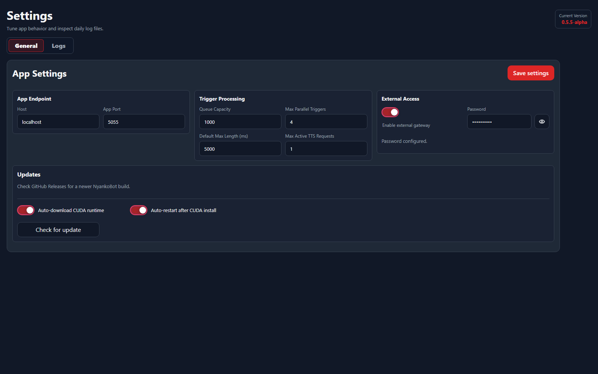

App
Settings
Settings controls the local endpoint, trigger queue behavior, external access, update flow, CUDA runtime install behavior, and daily log files.
App Endpoint

Use App Endpoint when you need to change how the local setup server is reached. These values affect setup pages, overlay viewer URLs, and OBS browser-source URLs.
HostThe hostname NyankoBot uses for local setup and viewer links. Leave it as localhost for normal same-PC use.App PortThe local HTTP port used by NyankoBot setup pages and overlay URLs. Changing it may require updating saved OBS browser-source URLs.Save settingsWrites endpoint, trigger processing, external access, and runtime update choices. If the page shows the restart hint, restart NyankoBot before expecting the change to apply.Restart hintAppears when a saved setting needs the app process to restart.Trigger Processing
Trigger Processing decides how much trigger work NyankoBot can queue and run at once. Increase these only when you understand the load your overlays, chat commands, TTS, and media actions create.
Queue CapacityMaximum waiting trigger jobs before new work is rejected. Higher values tolerate bursts but can let old events pile up.Max Parallel TriggersHow many trigger flows can execute at the same time. Higher values feel more responsive during bursts but can increase CPU, I/O, and connector pressure.Default Max LengthDefault maximum runtime for a trigger flow. Use it to prevent a broken or long-running action chain from hanging forever.Max Active TTS RequestsCaps concurrent TTS generation so voice requests do not overwhelm the local model runtime.External Access
External Access is for reaching the local NyankoBot setup or overlay endpoints from outside the default local browser flow. Keep it disabled unless you are deliberately exposing NyankoBot to another device or network path.
Enable external accessAllows the external-access path to be used. Treat this as an advanced/networking option.PasswordSets or changes the password used for external access. Leave blank when you want to keep the existing configured password.Password statusShows whether NyankoBot currently has an external-access password configured.Updates
The update box checks GitHub Releases for a newer NyankoBot build and can stage an update before restarting the app. It also controls CUDA runtime download behavior for systems that use GPU-backed local models.
Check for updateChecks GitHub Releases for a newer public release.Download updateDownloads and stages the newer release when one is available.Apply and restartApplies the staged update and restarts NyankoBot. Use it when you are ready for the app to briefly stop and relaunch.Auto-download CUDA runtimeLets NyankoBot download the CUDA runtime pack when GPU support is needed.Auto-restart after CUDA installAllows NyankoBot to restart after CUDA runtime installation so the native files can load cleanly.Update detailsShows release information returned by the update check.Logs
Logs are daily files used to diagnose startup, connector, overlay, source, TTS, trigger, and update problems. The viewer shows recent content from the selected log.
General / Logs tabsSwitches between app settings and the log viewer without leaving the Settings page.Logging levelControls log detail. Use Verbose while diagnosing a problem, then return to Info for normal use.Log FilesLists daily log files. Select one to load it into the viewer.RefreshReloads the log file list and selected log content.Collapse filesHides or shows the log file sidebar when you want more room for the viewer.Total log storageShows how much disk space the log folder is using.Log viewerDisplays the selected log with newer entries first. It auto-refreshes while a log is selected.Log Cleanup
Delete log fileDeletes one selected daily log after confirmation.Delete all logsDeletes all daily logs after confirmation. Use this only after saving any logs you need for issue reports.When reporting a bug through GitHub Issues, include the relevant error lines instead of deleting the logs first.